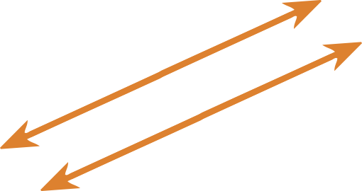
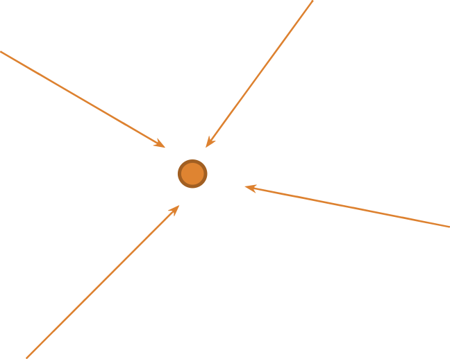

<table class="tabela">
<thead>
  <tr>
    <th style="width: 40%">Retas Paralelas</th>
    <th style="width: 40%">Retas Convergentes</th>
  </tr>
</thead>
<tbody>
    <tr style="text-align: center">
	  <td style="padding: 40px">A reta paralela é um “adjetivo” da reta. Digamos que é algo semelhante, correspondente. Retas paralelas são retas que nunca se encontram em toda sua extensão.</td>
	  <td style="padding: 40px">RETAS convergentes são linhas que tendem para um mesmo ponto.</td>
    </tr>
    <tr>
	  <td> </td>
	  <td> </td>
    </tr>
</tbody>
</table>